Get nexdesk running between your Linux and macOS machines in under 5 minutes.
Nexdesk uses a server/client model. The server is your primary machine — it captures your mouse and keyboard when you move the cursor to a screen edge. The client is your secondary machine — it receives and replays the input.
You'll set up the server first, then the client. The install script handles downloading the binary, configuring your PATH, and launching an interactive setup wizard.
Run the installer on your primary Linux machine:
curl -fsSL https://raw.githubusercontent.com/tapthaker/nexdesk/master/install.sh | shThe script downloads the correct binary for your platform and installs it to ~/.local/bin/nexdesk. If ~/.local/bin isn't in your PATH, it will offer to add it to your shell config.
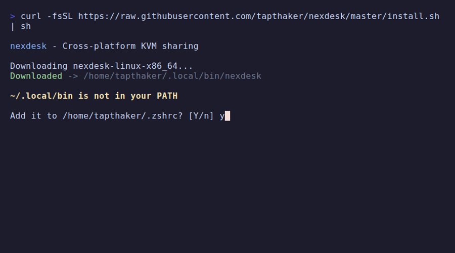
After installation, the setup wizard launches automatically. Press Enter to continue.
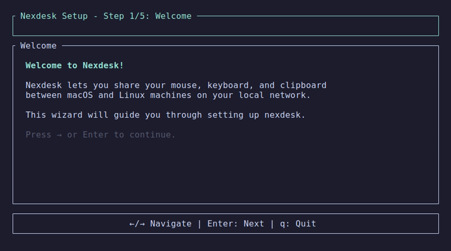
Select Server (the default). The server captures input and sends it to connected clients.
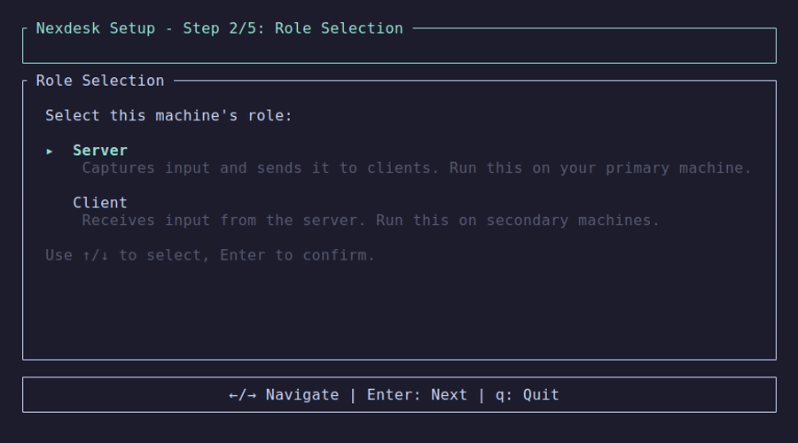
Choose which edge of your screen the client monitor is on. Use arrow keys to select. For example, if your Mac is to the right of your Linux machine, select Right.
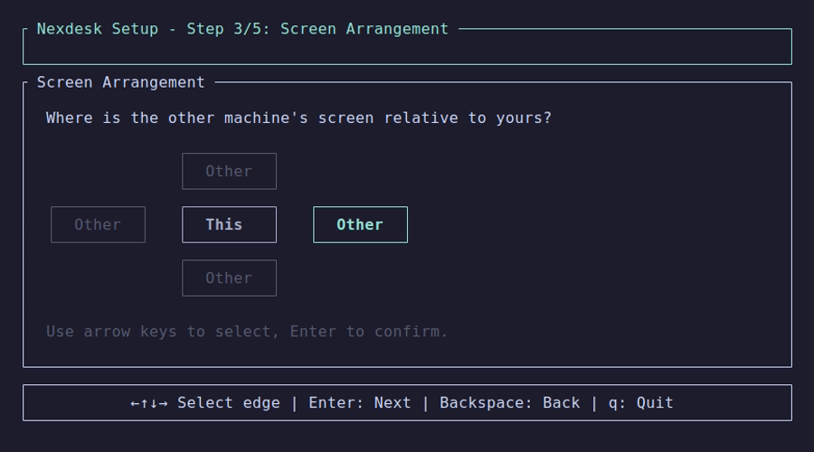
A self-signed TLS certificate is generated for encrypted communication. This happens automatically — just press Enter.
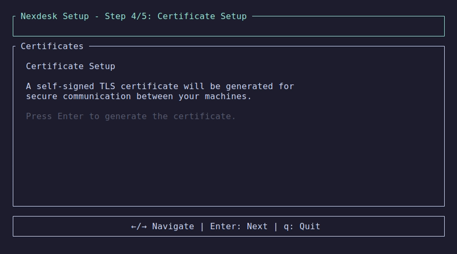
Nexdesk installs itself as a systemd user service that starts automatically on login.
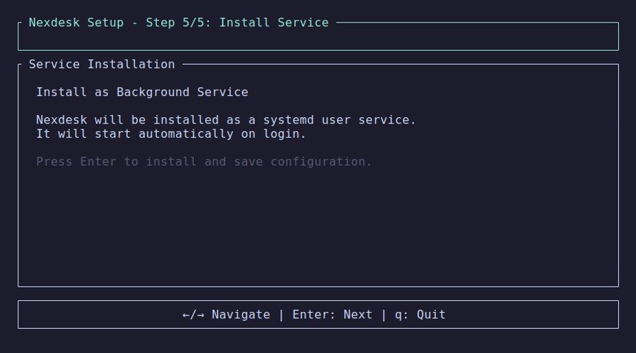
The server is configured and running. Press q to exit the wizard.
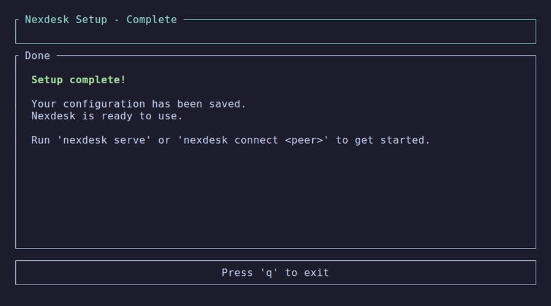
Run the same installer on your secondary macOS machine:
curl -fsSL https://raw.githubusercontent.com/tapthaker/nexdesk/master/install.sh | shThe script detects macOS and downloads the correct ARM or Intel binary.
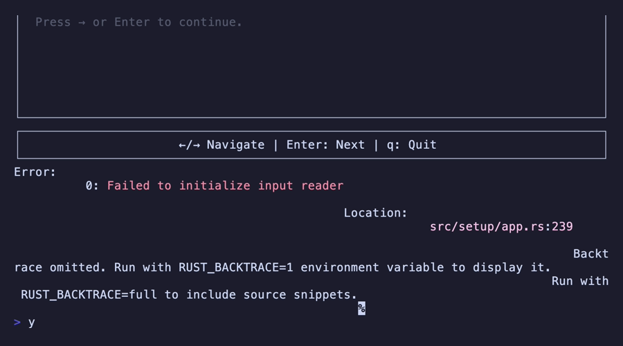
The setup wizard launches. Press Enter to begin.
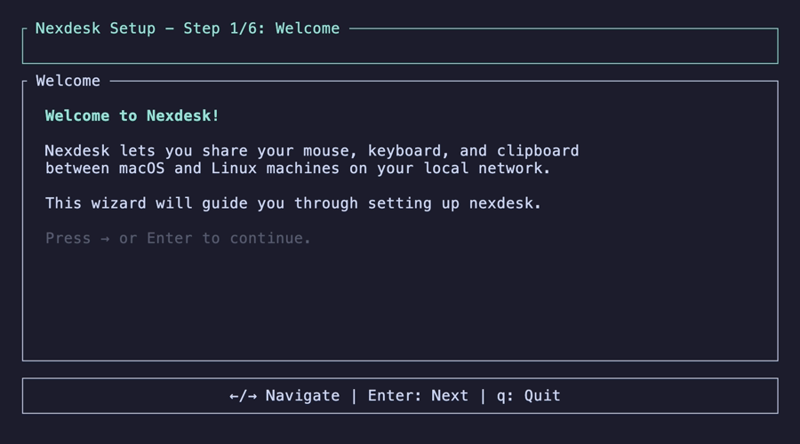
Use ↓ to select Client, then press Enter.
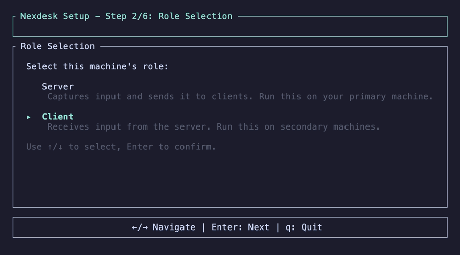
The wizard uses mDNS to auto-discover nexdesk servers on your network. Your Linux server should appear within a few seconds. Select it and press Enter.
If auto-discovery doesn't find your server, press Tab to switch to manual IP entry.
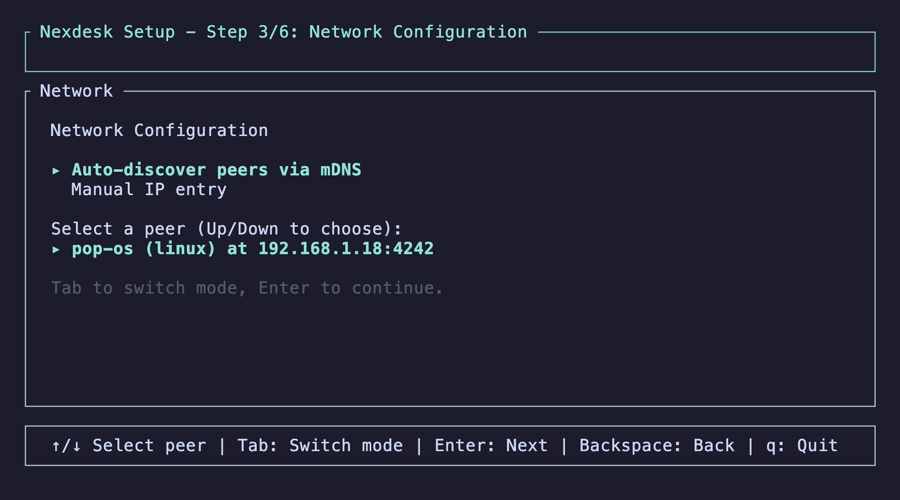
A TLS certificate is generated for this machine, just like the server. Press Enter.
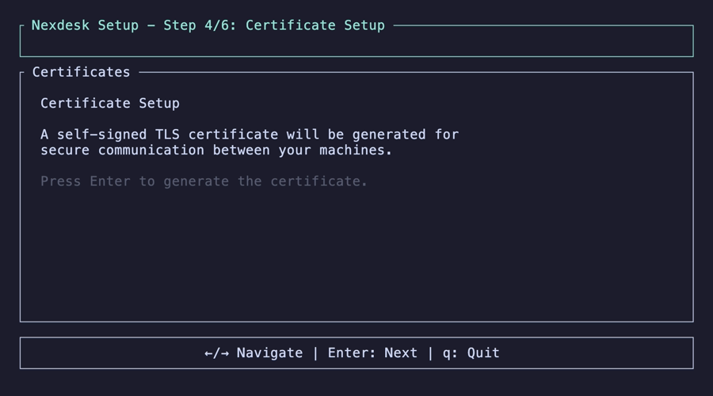
Nexdesk needs Accessibility permission to capture and inject keyboard/mouse events. A system dialog should appear. If not, open System Settings > Privacy & Security > Accessibility and enable the toggle for nexdesk (or your terminal app).
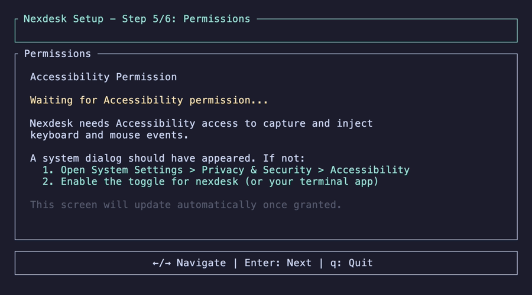
Nexdesk installs itself as a macOS LaunchAgent that starts automatically on login.
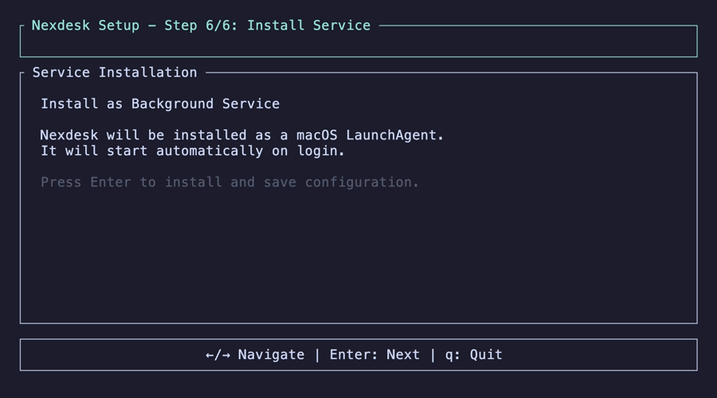
Setup is complete on both machines. Press q to exit.
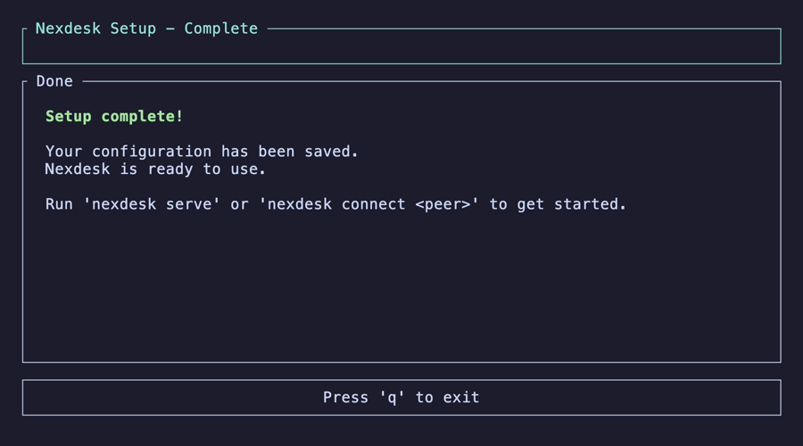
Once both machines are set up, nexdesk runs in the background. Simply move your mouse cursor to the configured screen edge and it will seamlessly jump to the other machine. Your keyboard input follows the cursor.
If you prefer not to use the background service, you can run nexdesk manually:
# On the server
nexdesk serve
# On the client
nexdesk connect# Show your machine's certificate fingerprint
nexdesk fingerprint
# Trust a specific client/server fingerprint
nexdesk trust <fingerprint>
# Re-run the setup wizard
nexdesk setup